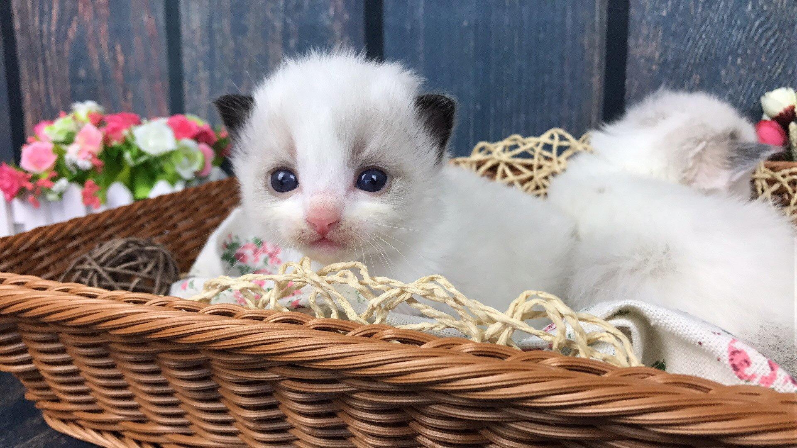

Introduction of the DHP
history-Durham House of Pets was found in 2016 by four international students from China. These four Chinese students are pets lovers and keep pets since they were young. They found that there are a lot of pets in Durham, but there was no pet store in there, so they decided to open a pets garden in order to make benefit to the pets lovers. In the year of 2016, we insisted to introducing the best not the most expensive products to the customers, and each customers gave great feedback to us.After a year of effort, during the year of 2017, the Durham House of Pets created benefit about one million dollars. In the year of 2018, the Durham House of Pets APP appeared on the market and also the one day delivery service bring more convenience to the customers.In the future, Durham House of Pets will open new stores in different area in New Hampshire even in the whole America.
Why use us-We are the first Pets Garden in Durham. We engage to bring the best service and products to the customers. The products in our store are all imported from China. They are the most popular brands in Chinese Market. We settle down to give every pet a wonderful life.

© 2018 Durham House of Pets
history-Durham House of Pets was found in 2016 by four international students from China. These four Chinese students are pets lovers and keep pets since they were young. They found that there are a lot of pets in Durham, but there was no pet store in there, so they decided to open a pets garden in order to make benefit to the pets lovers. In the year of 2016, we insisted to introducing the best not the most expensive products to the customers, and each customers gave great feedback to us.After a year of effort, during the year of 2017, the Durham House of Pets created benefit about one million dollars. In the year of 2018, the Durham House of Pets APP appeared on the market and also the one day delivery service bring more convenience to the customers.In the future, Durham House of Pets will open new stores in different area in New Hampshire even in the whole America.
Why use us-We are the first Pets Garden in Durham. We engage to bring the best service and products to the customers. The products in our store are all imported from China. They are the most popular brands in Chinese Market. We settle down to give every pet a wonderful life.
© 2018 Durham House of Pets